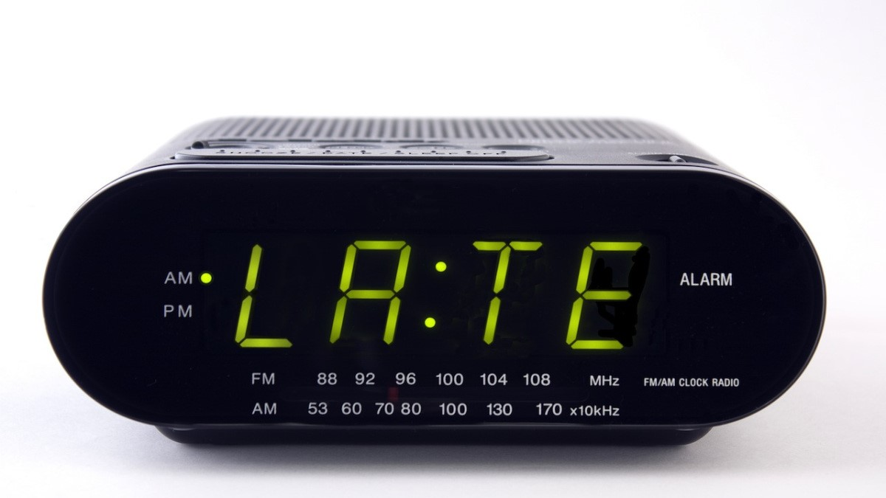

Menghilangkan Kebiasaan Datang Terlambat karena 'Jam Karet'
Wahaz 13-03-2017Budaya terlambat sudah telanjur mengakar di Indonesia. Masyarakat di Indonesia saat ini seolah sudah lumrah dengan masalah keterlambatan. Bahkan Indonesia dikenal di dunia internasional dengan 'jam karet' karena seringkali tidak dapat tepat waktu.
Hampir semua orang memang punya cerita tentang kisah keterlambatannya. Kebanyakan orang datang terlambat karena alasan telat bangun, tapi lebih banyak lagi yang beralasan kena macet di jalan.
Tapi, apapun alasannya, datang terlambat itu tidak baik. Bahkan jika Anda datang terlambat ke suatu acara, itu bisa berarti Anda tidak menghargai sang empunya acara. Berikut beberapa tips agar Anda tidak lagi datang terlambat :
- Perhitungkan waktu mobilisasi Anda
- Hilangkan stigma 'saya bisa mempersiapkan diri lebih cepat'
- Ubah pola pikir dan kebiasaan
- Datang 10 menit lebih awal
- Berpikir ke depan
- Coba sekali dan lihat hasilnya
Di Jakarta, sebenarnya macet tidak bisa dijadikan alasan, sebab macet bukan kejadian luar biasa lagi, tapi sudah menjadi rutinitas. Jadi, jika Anda masih menjadikan macet sebagai alasan keterlambatan Anda, itu berarti Anda tidak memperhitungkan mobilisasi Anda.
Sebelum pergi ke suatu tempat, Anda bisa memperhitungkan jarak antara rumah Anda dengan tempat tersebut. Apalagi jika tempat itu rutin Anda kunjungi sehari-hari, seperti pergi ke kantor, seharusnya perhitungan Anda bisa lebih tepat.
Lain lagi jika Anda mengunjungi tempat baru. Anda bisa menggunakan peta pada gadget Anda untuk mendapatkan petunjuk jalan sekaligus memperhitungkan waktu perjalanan Anda. Dengan kemajuan teknologi, seharusnya keterlambatan dapat dikurangi.
Setiap pagi pasti ada saja saat ketika Anda ingin tidur lebih lama. Akibatnya, Anda pun mengabaikan alarm yang sudah disetel sebelumnya agar tak telat bangun. Dalam benak pasti terpikir, Anda bisa melakukan segala sesuatunya dengan cepat nanti, sehingga Anda tidak akan terlambat.
Tapi ternyata, pemikiran Anda tak pernah benar-benar terjadi dan malah membuat Anda panik. Perhitungkanlah waktu bangun tidur dan waktu yang Anda butuhkan untuk bersiap-siap. Anda juga dapat mempersiapkan kebutuhan Anda di pagi hari sebelum tidur agar tidak terburu-buru saat pagi datang.
Yang sering terjadi adalah, Anda mendapat undangan acara jam lima sore, lantas Anda baru berangkat jam lima sore juga. Mulai sekarang, ubah pola pikir Anda.
Agar tidak datang terlambat, Anda harus memikirkan juga waktu tempuh untuk datang ke tempat tersebut, seberapa lama mencari tempat parkir, dan kegiatan lainnya yang perlu Anda lakukan sebelum menghadiri acara tersebut.
Jika Anda tidak mau terlambat, salah satu cara yang bisa dilakukan adalah dengan menetapkan waktu tertentu yang bisa didefinisikan sebagai keterlambatan.
Jika acara di mulai pada siang hari pada pukul 12.00 dan Anda menetapkan target untuk datang tepat pukul 12.00, tapi pada kenyataannya Anda datang pada pukul 12.01, itu berarti Anda terlambat. Hal ini akan membuat Anda stres dan panik. Untuk itu, setidaknya targetkan kedatangan Anda 10 menit sebelum acara di mulai. Hal ini akan menghindari Anda dari stres dan terlambat.
Salah satu cara untuk mencegah datang terlambat adalah dengan membuat jadwal. Anda bisa mendaftar kegiatan Anda pada malam sebelumnya, untuk mengurangi keterlambatan karena Anda sudah tahu apa yang ingin Anda kerjakan setelah pekerjaan yang lain selesai.
Anda juga bisa memperhitungkan waktu lebih baik lagi daripada Anda harus menyelesaikan satu pekerjaan lebih dahulu kemudian baru melihat jadwal selanjutnya.
Jika terlambat sudah menjadi kebiasaan Anda, cobalah sesekali Anda datang tepat waktu ke sebuah acara dan rasakan hasilnya. Pilih saja acara yang Anda suka, dan lakukan hal-hal seperti yang disebutkan di atas. Bandingkan apa yang Anda rasakan ketika terlambat dan bagaimana rasa ketika datang tepat waktu. Selain bermanfaat untuk diri sendiri, datang tepat waktu juga bisa membuat sang empunya acara merasa dihormati dan dihargai.
Komentar
Saya Biasanya kalo janjian jam brp,temen saya datengnya jam brp
Balas 237 13-03-2017Betul Banget gan saya juga
237 14-03-2017Rekomendasi

15 Kelakuan Beretika Ini Sering Dilakukan, Padahal Salah!

Adab Bertamu dan Menerima Tamu